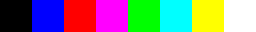
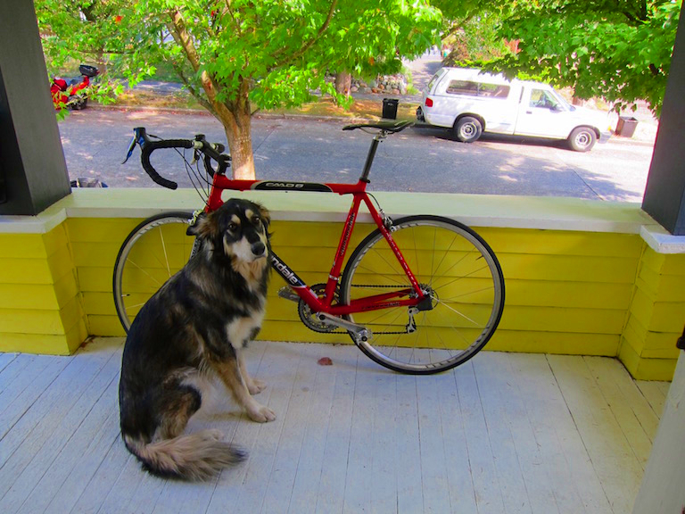

Welcome friends,
For the first assignment we'll just get to know the codebase a little bit and practice manipulating images, transforming things, breaking stuff, it should be fun!
We have a pretty basic datastructure to store images in our library. The image struct stores the image metadata like width, height, and number of channels. It also contains the image data stored as a floating point array. You can check it out in src/image.h, it looks like this:
typedef struct{
int h,w,c;
float *data;
} image;
We have also provided some functions for loading and saving images. Use the function:
image im = load_image("image.jpg");
to load a new image. To save an image use:
save_image(im, "output");
which will save the image as output.jpg. If you want to make a new image with dimensions Width x Height x Channels you can call:
image im = make_image(w,h,c);
You should also use:
free_image(im);
when you are done with an image. So it goes away. You can check out how all this is implemented in src/load_image.c. You probably shouldn't change anything in this file. We use the stb_image libary for the actual loading and saving of jpgs because that is, like, REALLY complicated. I think. I've never tried. Anywho....
You'll be modifying the file src/process_image.c. We've also included a python compatability library. uwimg.py includes the code to access your C library from python. tryit.py has some example code you can run. We will build the library using make. Simply run the command:
make
after you make any changes to the code. Then you can quickly test your changes by running:
./uwimg test
You can also try running the example python code to generate some images:
python tryit.py
The most basic operation we want to do is change the pixels in an image. As we talked about in class, we represent an image as a 3 dimensional tensor. We have spatial information as well as multiple channels which combine together to form a color image:
The convention is that the coordinate system starts at the top left of the image, like so:

In our data array we store the image in CHW format. The first pixel in data is at channel 0, row 0, column 0. The next pixel is channel 0, row 0, column 1, then channel 0, row 0, column 2, etc.
Your first task is to fill out these two functions in src/process_image.c:
float get_pixel(image im, int x, int y, int c);
void set_pixel(image im, int x, int y, int c, float v);
get_pixel should return the pixel value at column x, row y, and channel c. set_pixel should set the pixel to the value v. You will need to do bounds checking to make sure the coordinates are valid for the image. set_pixel should simply return without doing anything if you pass in invalid coordinates. For get_pixel we will perform padding to the image. There are a number of possible padding strategies:
We will use the clamp padding strategy. This means that if the programmer asks for a pixel at column -3, use column 0, or if they ask for column 300 and the image is only 256x256 you will use column 255 (because of zero-based indexing).
We can test out our pixel-setting code on the dog image by removing all of the red channel. See line 3-8 in tryit.py:
# 1. Getting and setting pixels
im = load_image("data/dog.jpg")
for row in range(im.h):
for col in range(im.w):
set_pixel(im, row, col, 0, 0)
save_image(im, "figs/dog_no_red")
Then try running it. Check out our very not red dog:
Sometimes you have an image and you want to copy it! To do this we should make a new image of the same size and then fill in the data array in the new image. You could do this by getting and setting pixels, by looping over the whole array and just copying the floats (pop quiz: if the image is 256x256x3, how many total pixels are there?), or by using the built-in memory copying function memcpy.
Fill in the function image copy_image(image im) in src/process_image.c with your code.
Now let's start messing with some images! People like making images grayscale. It makes them look... old? Or something? Let's do it.
Remember how humans don't see all colors equally? Here's the chart to remind you:

This actually makes a huge difference in practice. Here's a colorbar we may want to convert:

If we convert it using an equally weighted mean K = (R+G+B)/3 we get a conversion that doesn't match our perceptions of the given colors:

Instead we are going to use a weighted sum. Now, there are a few ways to do this. If we wanted the most accurate conversion it would take a fair amount of work. sRGB uses gamma compression so we would first want to convert the color to linear RGB and then calculate relative luminance.
But we don't care about being toooo accurate so we'll just do the quick and easy version instead. Video engineers use a calculation called luma to find an approximation of perceptual intensity when encoding video signal, we'll use that to convert our image to grayscale. It operates directly on the gamma compressed sRGB values that we already have! We simply perform a weighted sum:
Y' = 0.299 R' + 0.587 G' + .114 B'
Using this conversion technique we get a pretty good grayscale image! Now we can run tryit.py to output graybar.jpg. See lines 10-13:
# 3. Grayscale image
im = load_image("data/colorbar.png")
graybar = rgb_to_grayscale(im)
save_image(graybar, "graybar")

Implement this conversion for the function rgb_to_grayscale. Return a new image that is the same size but only one channel containing the calculated luma values.
Now let's write a function to add a constant factor to a channel in an image. We can use this across every channel in the image to make the image brighter or darker. We could also use it to, say, shift an image to be more or less of a given color.
Fill in the code for void shift_image(image im, int c, float v);. It should add v to every pixel in channel c in the image. Now we can try shifting all the channels in an image by .4 or 40%. See lines 15-20 in tryit.py:
# 4. Shift Image
im = load_image("data/dog.jpg")
shift_image(im, 0, .4)
shift_image(im, 1, .4)
shift_image(im, 2, .4)
save_image(im, "overflow")
But wait, when we look at the resulting image overflow.jpg we see something bad has happened! The light areas of the image went past 1 and when we saved the image back to disk it overflowed and made weird patterns:

Our image pixel values have to be bounded. Generally images are stored as byte arrays where each red, green, or blue value is an unsigned byte between 0 and 255. 0 represents none of that color light and 255 represents that primary color light turned up as much as possible.
We represent our images using floating point values between 0 and 1. However, we still have to convert between our floating point representation and the byte arrays that are stored on disk. In the example above, our pixel values got above 1 so when we converted them back to byte arrays and saved them to disk they overflowed the byte data type and went back to very small values. That's why the very bright areas of the image looped around and became dark.
We want to make sure the pixel values in the image stay between 0 and 1. Implement clamping on the image so that any value below zero gets set to zero and any value above 1 gets set to one. Fill in void clamp_image(image im); to modify the image in-place. Then when we clamp the shifted image and save it we see much better results, see lines 22-24 in tryit.py:
# 5. Clamp Image
clamp_image(im)
save_image(im, "fixed")
and the resulting image, fixed.jpg:

So far we've been focussing on RGB and grayscale images. But there are other colorspaces out there too we may want to play around with. Like Hue, Saturation, and Value (HSV). We will be translating the cubical colorspace of sRGB to the cylinder of hue, saturation, and value:

Hue can be thought of as the base color of a pixel. Saturation is the intensity of the color compared to white (the least saturated color). The Value is the perception of brightness of a pixel compared to black. You can try out this demo to get a better feel for the differences between these two colorspaces. For a geometric interpretation of what this transformation:

Now, to be sure, there are lots of issues with this colorspace. But it's still fun to play around with and relatively easy to implement. The easiest component to calculate is the Value, it's just the largest of the 3 RGB components:
V = max(R,G,B)
Next we can calculate Saturation. This is a measure of how much color is in the pixel compared to neutral white/gray. Neutral colors have the same amount of each three color components, so to calculate saturation we see how far the color is from being even across each component. First we find the minimum value
m = min(R,G,B)
Then we see how far apart the min and max are:
C = V - m
and the Saturation will be the ratio between the difference and how large the max is:
S = C / V
Except if R, G, and B are all 0. Because then V would be 0 and we don't want to divide by that, so just set the saturation 0 if that's the case.
Finally, to calculate Hue we want to calculate how far around the color hexagon our target color is.

We start counting at Red. Each step to a point on the hexagon counts as 1 unit distance. The distance between points is given by the relative ratios of the secondary colors. We can use the following formula from Wikipedia:

There is no "correct" Hue if C = 0 because all of the channels are equal so the color is a shade of gray, right in the center of the cylinder. However, for now let's just set H = 0 if C = 0 because then your implementation will match mine.
Notice that we are going to have H = [0,1) and it should circle around if it gets too large or goes negative. Thus we check to see if it is negative and add one if it is. This is slightly different than other methods where H is between 0 and 6 or 0 and 360. We will store the H, S, and V components in the same image, so simply replace the R channel with H, the G channel with S, etc.
Ok, now do it all backwards in hsv_to_rgb!
Finally, when your done we can mess with some images! In tryit.py we convert an image to HSV, increase the saturation, then convert it back, lines 26-32:
# 6-7. Colorspace and saturation
im = load_image("data/dog.jpg")
rgb_to_hsv(im)
shift_image(im, 1, .2)
clamp_image(im)
hsv_to_rgb(im)
save_image(im, "dog_saturated")

Hey that's exciting! Play around with it a little bit, see what you can make. Note that with the above method we do get some artifacts because we are trying to increase the saturation in areas that have very little color. Instead of shifting the saturation, you could scale the saturation by some value to get smoother results!
Implement void scale_image(image im, int c, float v); to scale a channel by a certain amount. This will give us better saturation results. Note, you will have to add the necessary lines to the header and python library, it should be very similar to what's already there for shift_image. Now if we scale saturation by 2 instead of just shifting it all up we get much better results:
im = load_image("data/dog.jpg")
rgb_to_hsv(im)
scale_image(im, 1, 2)
clamp_image(im)
hsv_to_rgb(im)
save_image(im, "dog_scale_saturated")

Implement RGB to Hue, Chroma, Lightness, a perceptually more accurate version of Hue, Saturation, Value. Note, this will involve gamma decompression, converting to CIEXYZ, converting to CIELUV, converting to HCL, and the reverse transformations. The upside is a similar colorspace to HSV but with better perceptual properties!
You only need to turn in one file, your process_image.c. Use the dropbox link on the class website.